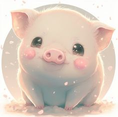

Historia
Los cerditos han sido compañeros de la humanidad por siglos, aportando en la agricultura y siendo símbolos de buena fortuna en algunas culturas.
Curiosidades
- Los cerdos son animales muy inteligentes, incluso más que los perros.
- Pueden reconocer sus nombres y aprender trucos.
- Adoran el barro porque los ayuda a regular su temperatura.
Galería
¡Mira qué tierno!